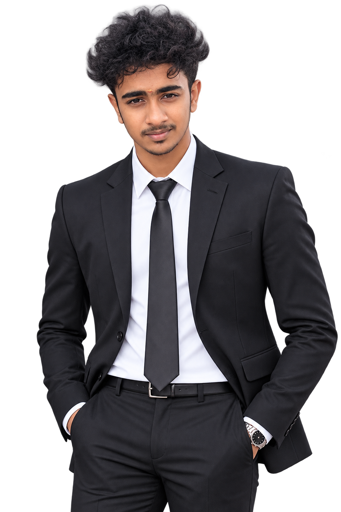
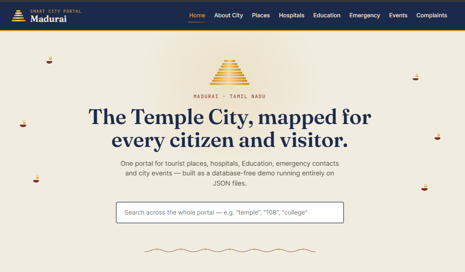
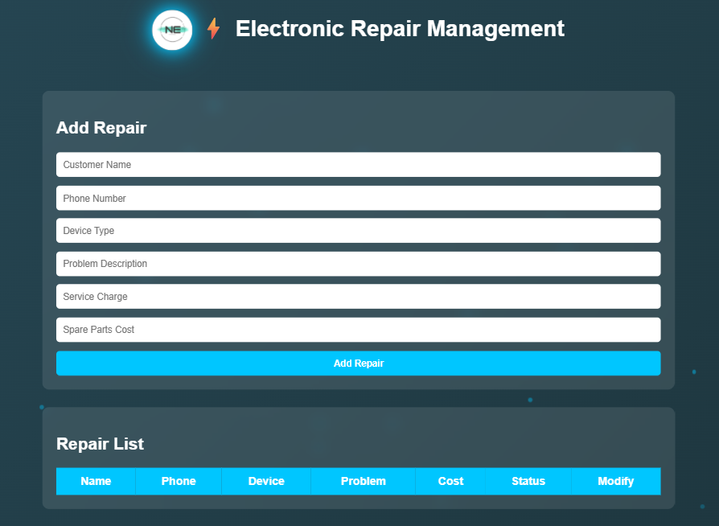

I'm a Computer Science graduate focused on UI/UX and front-end development — I design interfaces in Figma and then build them myself, so what ships stays close to what was designed.
My toolkit spans Figma, HTML, CSS, JavaScript and React on the front end, with Python, SQL and Node.js underneath for the parts that need real logic. I've also spent time with AI/ML fundamentals during an internship, which shapes how I think about data-driven interfaces.
I'm most interested in projects where design and engineering decisions affect each other — dashboards, portals, and tools that need to feel simple even when the underlying system isn't.

